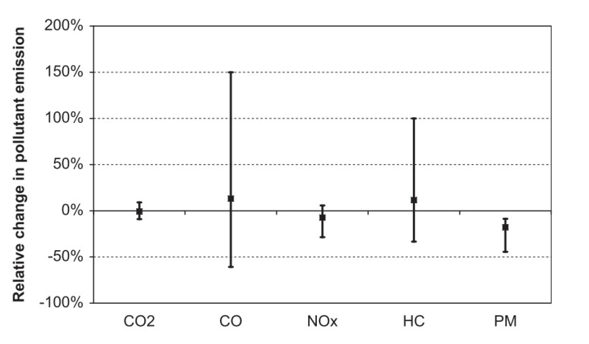

On behalf of the Zurich Environmental and Health Protection (UZG) agency, a literature study was carried out to gather the most important scientific findings regarding the connections between traffic planning measures and air quality. The findings served as a scientific basis for decision-making on the remediation plans for the Bellerivestrasse.
 Figure: Percentage change in emission levels with a speed reduction from 50 km/h to 30 km/h.
The City of Zurich commissioned the research group at the IDP in cooperation with the Centre for Aviation to conduct a literature study focusing on the relationship between traffic flow, driving speed and pollutant emissions. The focus was on the reduction of driving speed from 50 km/h to 30 km/h, the emission differences between the traffic modes “green wave” vs. “stop-and-go” and the reduction of lanes from four to two.
The findings obtained served the city of Zurich as a scientific basis for the traffic regulation measures planned for Bellerivestrasse at the time, which had the goal of reducing traffic congestion, lowering noise emissions, and promoting green mobility.
Acknowledgment
This project was funded by the Department of Environment and Health Protection (UZG) of the Canton of Zurich. The project finished in January 2020.